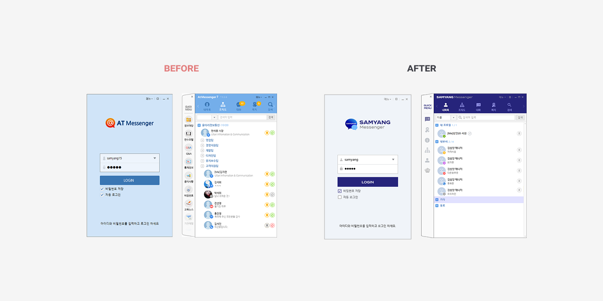
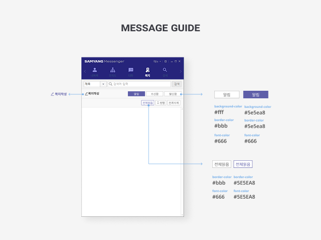
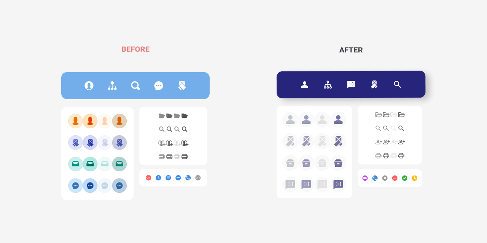
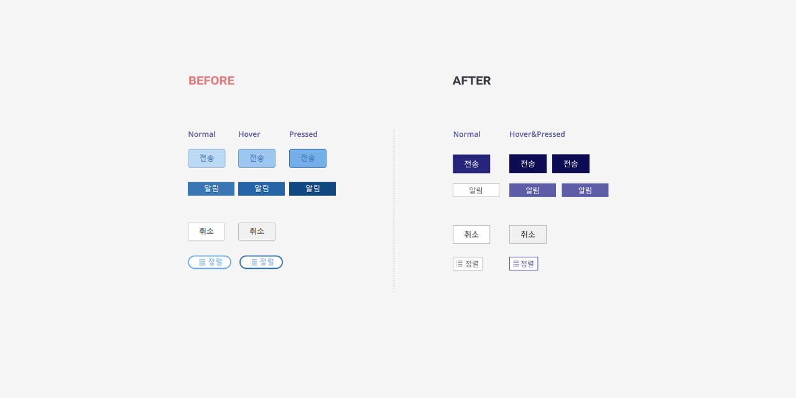

MES 화면 설계서의 Figma 기반 디자인 시스템 전환
PPT 중심의 MES 화면 설계서를 Figma 기반 디자인 시스템으로 전환하고, Web과 Tablet 환경에서 재사용 가능한 컴포넌트 라이브러리로 확장한 프로젝트입니다. 화면 단위로 흩어져 있던 UI를 Foundation, Component, Pattern 구조로 재정리하고, 컬러·타이포그래피 변수, 간격 규칙, Auto Layout, variant, 네이밍 기준을 수립해 설계–디자인–개발 간 연결성을 강화했습니다.

PPT 기반 설계서를 대체하는 Figma 디자인 시스템의 전체 구조를 Foundation, Web Library, Tablet Library 흐름으로 정리했습니다.
Context
기존 MES 화면 설계는 PPT 문서를 중심으로 관리되었고, Figma 산출물 역시 개별 화면 단위로 존재해 재사용과 변경 관리에 한계가 있었습니다. 이후 Web과 Tablet 환경을 함께 고려해야 하는 상황이 되면서, 단순 화면 정리가 아니라 공통 Foundation과 디바이스별 UI Library를 분리해 운영 가능한 구조로 재설계할 필요가 있었습니다.


PPT 문서 기반의 정적인 설계 방식에서 컴포넌트 조합 기반의 Figma 설계 방식으로 전환했습니다. / 개별 화면을 해체해 공통 요소와 디바이스별 UI 기준으로 재정의했습니다.
Problem
- PPT 기반 설계서로는 화면 간 일관성과 변경 이력을 체계적으로 관리하기 어려웠습니다.
- Figma 화면이 개별 산출물로만 존재해 공통 컴포넌트, 상태값, 간격 기준이 명확하지 않았습니다.
- Web과 Tablet 화면의 UI 기준이 분리되지 않아 디바이스별 정보 밀도와 사용 환경을 반영하기 어려웠습니다.
- 설계–디자인–개발 간 공통 기준이 부족해 반복 커뮤니케이션과 수정 비용이 발생했습니다.

컬러, 타이포그래피, 간격 기준을 Foundation 레벨로 정리해 Web과 Tablet 라이브러리의 공통 기반을 마련했습니다.
Strategy
- 화면 단위 산출물을 해체해 Foundation, Component, Pattern, Template 구조로 재정의했습니다.
- 컬러와 타이포그래피를 변수로 관리해 전체 시스템의 일관성을 확보했습니다.
- Button, Input, Table, Tab, Modal 등 반복 사용되는 UI를 컴포넌트화하고 variant 기준을 정리했습니다.
- Web과 Tablet 라이브러리를 분리해 각 디바이스의 사용 환경과 정보 밀도에 맞는 UI 기준을 설계했습니다.
- 공통 Foundation은 유지하되, 디바이스별 컴포넌트는 독립적으로 관리할 수 있는 구조를 검토했습니다.
- 간격, Auto Layout, 네이밍, 사용 가이드를 함께 정리해 개발 협업과 유지보수성을 높이는 방향으로 설계했습니다.

주요 컴포넌트에 간격 규칙과 Auto Layout을 적용해 재사용 가능한 구조로 정리했습니다.
Execution
- 기존 PPT 설계서와 Figma 화면을 분석해 반복되는 UI 요소와 패턴을 분류했습니다.
- 컬러, 타이포그래피, spacing 기준을 Foundation 레벨로 정리했습니다.
- 주요 컴포넌트를 Level 2 구조까지 정리하고, 상태별 variant와 네이밍 규칙을 수립했습니다.
- Web UI Library와 Tablet UI Library를 별도 파일로 구성해 컴포넌트 검색과 사용 혼선을 줄이는 방향으로 정리했습니다.
- Tablet 환경에서는 터치 영역, 정보 밀도, 화면 크기를 고려해 Web과 다른 컴포넌트 기준을 적용했습니다.
- 디자인 시스템 파일을 라이브러리로 퍼블리시하고, 참조 기반으로 화면 설계가 가능하도록 구조를 개선했습니다.

Web과 Tablet 라이브러리를 분리해 디바이스별 UI 기준을 명확히 하고, 참조 기반 협업 구조를 마련했습니다.
Result
PPT 중심의 정적인 설계 방식에서 벗어나, Figma 기반의 재사용 가능한 디자인 시스템 구조로 전환했습니다. 공통 Foundation과 디바이스별 UI Library를 분리하면서 Web과 Tablet 화면의 기준을 명확히 했고, 컴포넌트 조합 방식으로 신규 화면을 확장할 수 있는 기반을 마련했습니다. 이를 통해 화면 간 일관성, 유지보수 효율, 개발 협업 기준을 강화했습니다.
디자인 시스템은 단순히 컴포넌트를 모아두는 작업이 아니라, 복잡한 운영 환경에서 일관성과 확장성을 유지하기 위한 기준을 만드는 일이라고 판단했습니다. 특히 Web과 Tablet처럼 사용 환경이 다른 경우, 하나의 라이브러리에 모든 컴포넌트를 넣기보다 공통 Foundation을 기준으로 디바이스별 라이브러리를 분리하는 것이 검색성, 유지보수성, 협업 효율 측면에서 더 적합하다고 보았습니다.